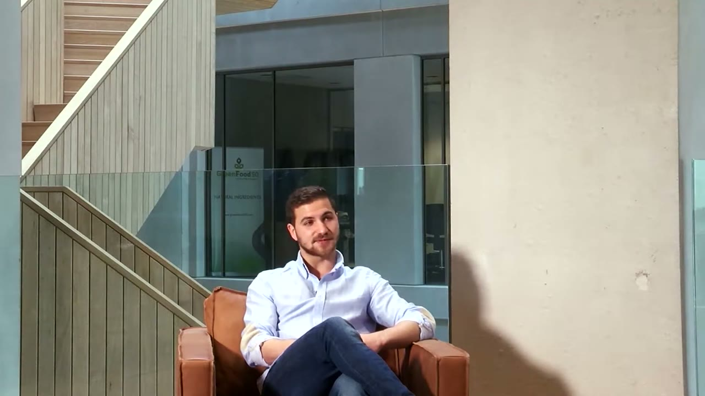
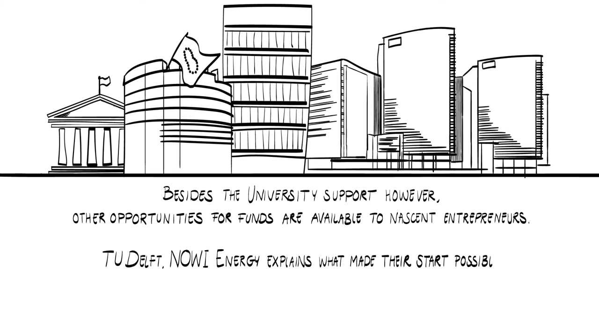
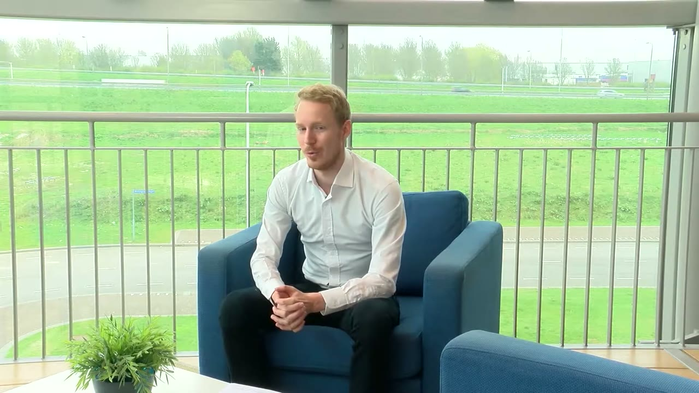
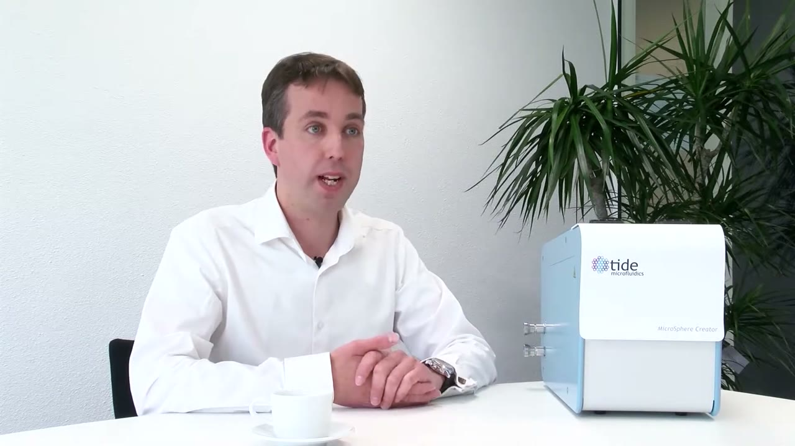
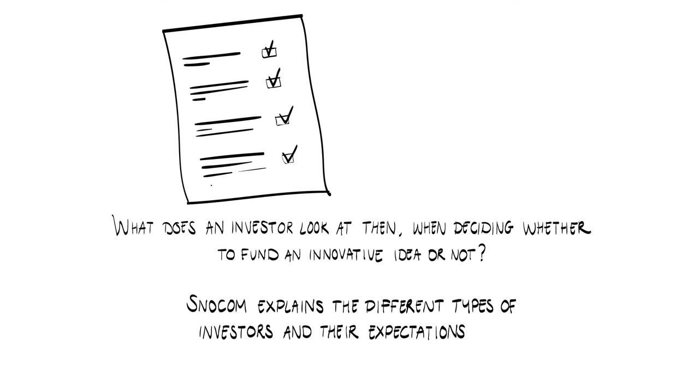
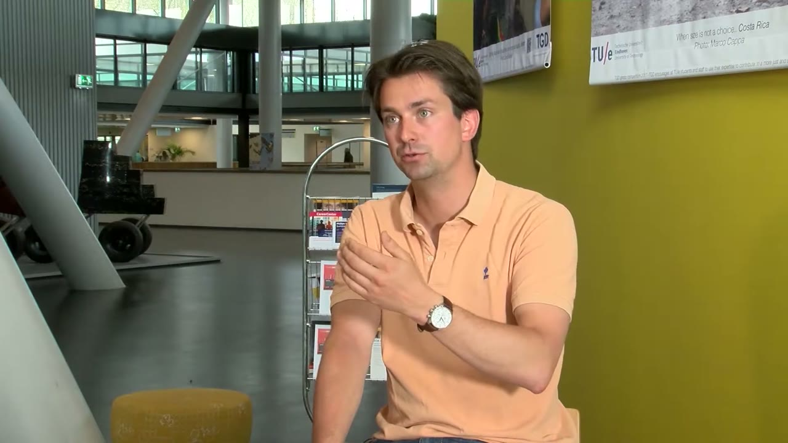
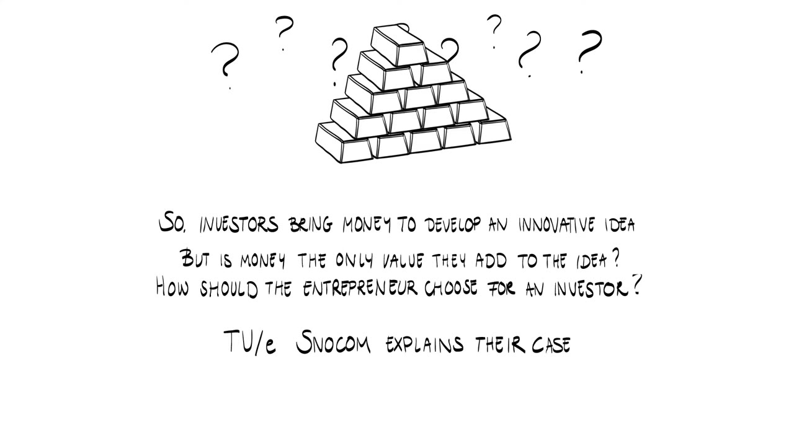
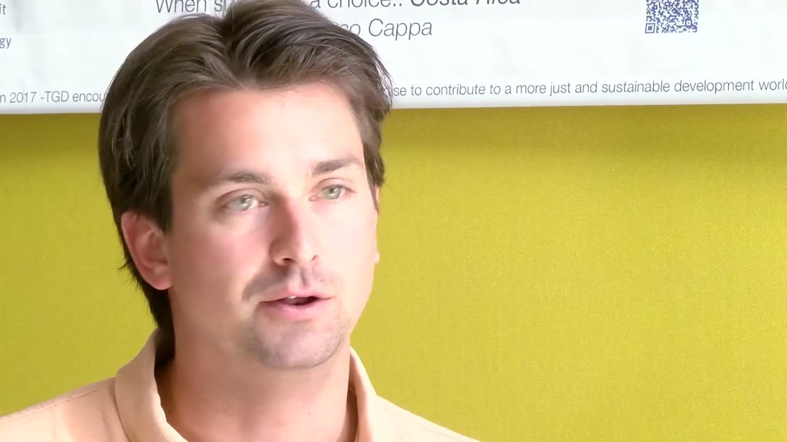
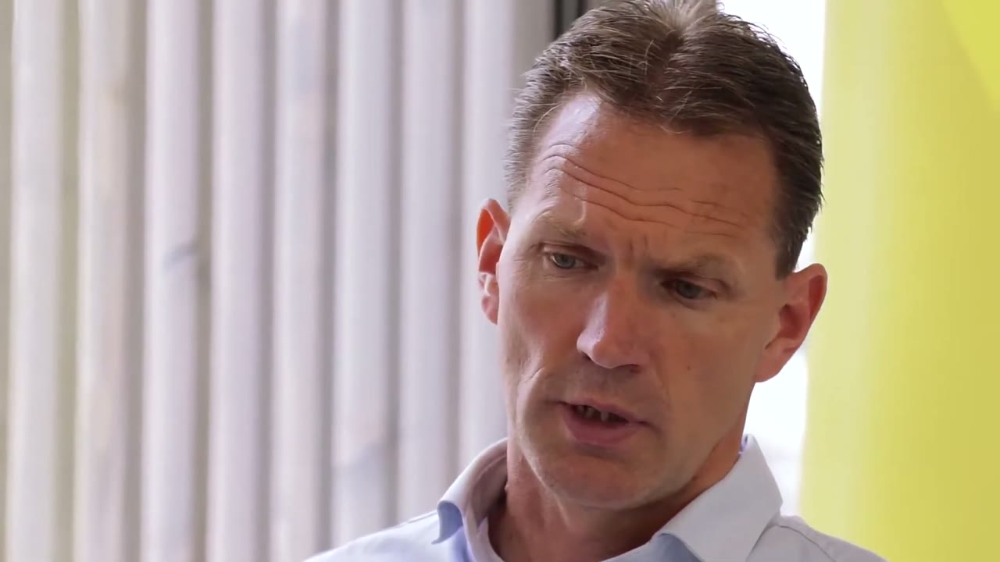

Starting inside the university
- Constantinos PatiniosN-CHROMA, Wageningen UR
- Nowi EnergyTU Delft. The video does not name the speaker.
- Wim van HoeveUniversity of Twente. The device on the table carries the Tide logo.
- SnocomTU Eindhoven. The video does not name the speaker.
- NSUREWageningen UR. The video does not name the speaker.
For a nascent entrepreneur, finding money to prove that the idea has potential is a challenge. The narrator asks what can help at this first stage, and Constantinos Patinios of N-CHROMA answers with his own start. His university supported him at this step.
Developing a biotechnology idea takes a lot of money and a lot of time. A proof of principle usually takes six months to a year. You also need lab space and lab equipment, and consumables are expensive. Money and time were hard for him to find, so he made use of being a student.
I took advantage of my studentship. As a master's student I created a program at Wageningen University and Research, where I proposed my idea. They liked it, and we created a thesis about it. This is how I started with my company.


Pilots, competitions and subsidies
University support is one option. The narrator points out that nascent entrepreneurs have others, and Nowi Energy from TU Delft explains what made their start possible.


To some extent it's a chicken and the egg problem. The things investors want to see, you need money to make those things. And if you don't have the money, you cannot make it.
The founder thinks the Netherlands is a good place for this, because there are a lot of different options. Nowi used three.
- Pilot projects. They tested prototypes for companies and asked those companies to pay toward the testing.
- Innovation competitions. There are plenty of international awards, and they generally come with a cash prize. Nowi won the Accenture Innovation Awards, the Startup World Cup in Copenhagen and an innovation award in Dubai. For an early stage startup this can help.
- Innovation subsidies. Different types exist for different phases of a startup. They can help you make the next step in development and reach the level where an investor would be interested.


A strategy in steps
The next question is whether it helps to have a strategy for when to start searching for money and whom to contact. Wim van Hoeve from Twente describes the difficulty of making one for a medical product.
The main challenge with a medical product is bridging the time before it can be brought to the medical market. That takes long and requires a lot of investment. You need money to build the products and to show that they are safe. So the company tried to develop the product in a few steps, and for them it was essential to find customers in a very early phase. It worked well: early customers meant a stream of income, and that income drew interest from investors.
At the time of the interview the company is in the middle of an investment round, both to grow and to bring the product to the medical field faster.


What an investor looks at
What does an investor check when deciding whether to fund an innovative idea? Snocom, from TU Eindhoven, lists it in order.


First, an investor always needs some confirmation of the market. They want to know the business case you are offering your customers, so you must have worked that out already and be able to say what the added value is.
If that doesn't add up, you are definitely out. So make sure that the business case you offer for your customers is really sound.
Second, you need to show how much money you need to achieve your goals. Third, the investor wants to see some feedback from the market. Depending on your stage that is a letter of intent or an order. Getting an order when you have just built your first or second prototype is very difficult. Most likely the order arrives well after your first VC money, so a letter of intent helps a lot.


Choosing an investor
Investors bring money. The narrator asks whether money is the only value they add, and how an entrepreneur should choose one. Snocom tells its own case.


If you invent new equipment, you need to build several prototypes before everything works, and a student has no funding for that. The Snocom founder got support from a very experienced venture capitalist, who joined the team while the founder was still in college and helped raise the funds. Equipment needs a lot of money, and finding the right funding is what takes the most time.
It's not making the prototypes and making them work. It's getting the funding there in order to make the prototypes and make the prototypes work.
The founder puts it down to luck. The VC was a friend of a colleague of the founder's father. One day the father said they should visit him. They went, there was a natural click, and the two decided to work together.


Start before you need the money
The last question asks for advice to entrepreneurs who are searching for money. NSURE gives three tips.
You really have to start when you don't need money.
The reason is time. It normally takes quite long to get from the initial proposition to closing the deal.
The second tip is to choose between the types of investor. A purely financial investor will interact with your financial performance as a company. A more technical, customer-related investor will certainly influence your technical agenda.
The third is about where to meet them. There are many opportunities. The NSURE speaker goes to venture capital forums, which are organised nearly every week, but you should pick the right ones: in the right financial hotspots and with the right crowd. Other routes are the European Enterprise Network and local or regional initiatives, which are quite easy to join.


Terms to know
- Chicken and egg problem
- Nowi's description of early funding: you need money to make the things investors want to see before they give you money.
- Letter of intent
- Feedback from the market that an investor accepts when an order is not realistic yet, for example when you have only your first or second prototype.
- Financial investor
- An investor who is purely financial and interacts with your financial performance as a company.
- Technical, customer-related investor
- An investor closer to your technology and customers, who will influence your technical agenda.